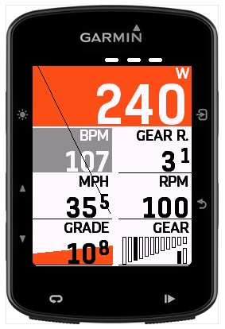
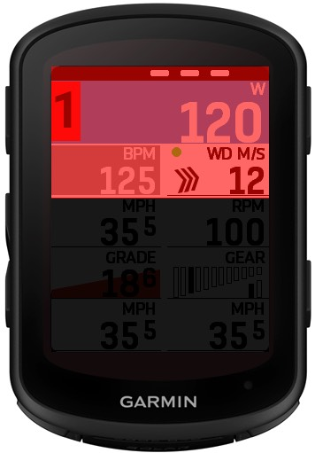
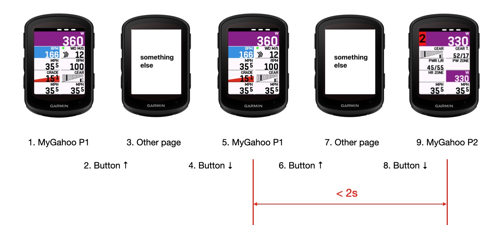

Layout e Cambio Pagina¶
Anche se MyGahoo Pro è un campo singolo, può contenere fino a 3 pagine virtuali, e possono essere impostati layout diversi per ciascuna pagina. Per i dispositivi di dimensioni diverse, MyGahoo Pro può teoricamente visualizzare fino a 21, 27 o 33 moduli di dati.
Layout¶
Ogni dispositivo supporta tre modalità di layout: ampio, normale e compatto. Queste possono essere configurate in ConnectIQ. Tuttavia, a seconda della dimensione dello schermo del dispositivo, il numero massimo di righe visualizzabili varia. Consulta la tabella seguente per esempi specifici.
| Modello Dispositivo | 520P / 820 | 530 / 540 / 830 / 840 | 10xx / explorer1&2 |
|---|---|---|---|
| Layout Massimo Supportato | 1+3 | 1+4 | 1+5 |
| Esempio |  |  |
 |
Modalità di Cambio Pagina¶
Ci sono 2 modi per cambiare pagina virtuale in MyGahoo Pro: tramite touch screen o tramite pulsanti. Nei 3 secondi successivi al cambio pagina, il numero della pagina corrente verrà mostrato nell'angolo in alto a sinistra dello schermo.

1. Modalità Touch¶
Questo metodo è limitato ai dispositivi con touch screen. Toccando l'area sinistra della metà inferiore dello schermo si naviga a sinistra, mentre toccando l'area destra si naviga a destra. Toccando la metà superiore dello schermo si richiama il menu di sistema come da comportamento originale.
 |
 |
 |
|---|---|---|
| Area touch cambio a sinistra | Area touch cambio a destra | Area menu di sistema |
2. Modalità Pulsanti¶
A causa delle limitazioni a livello di sistema Garmin, teoricamente i campi dati non possono rilevare alcun input dell’utente eccetto il touch. Tuttavia, esiste un metodo alternativo che consente il cambio pagina virtuale tramite pulsanti.
In breve, la pagina MyGahoo deve passare da "nascosta" a "visualizzata" due volte consecutivamente, con un intervallo tra i due eventi di visualizzazione inferiore a 2 secondi. Cioè, quando la schermata sta visualizzando il campo dati MyGahoo, devi premere ↑ ↓ ↑ ↓ consecutivamente, e ciò attiverà un cambio pagina in avanti. In questa modalità è supportato solo il cambio in avanti fino al ritorno alla prima pagina. Il processo specifico è illustrato nella figura seguente.
